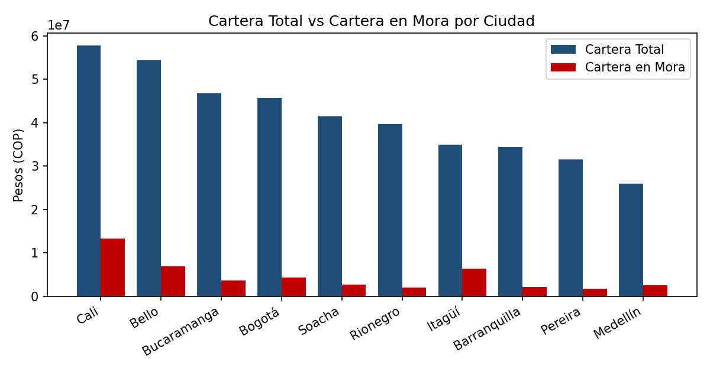
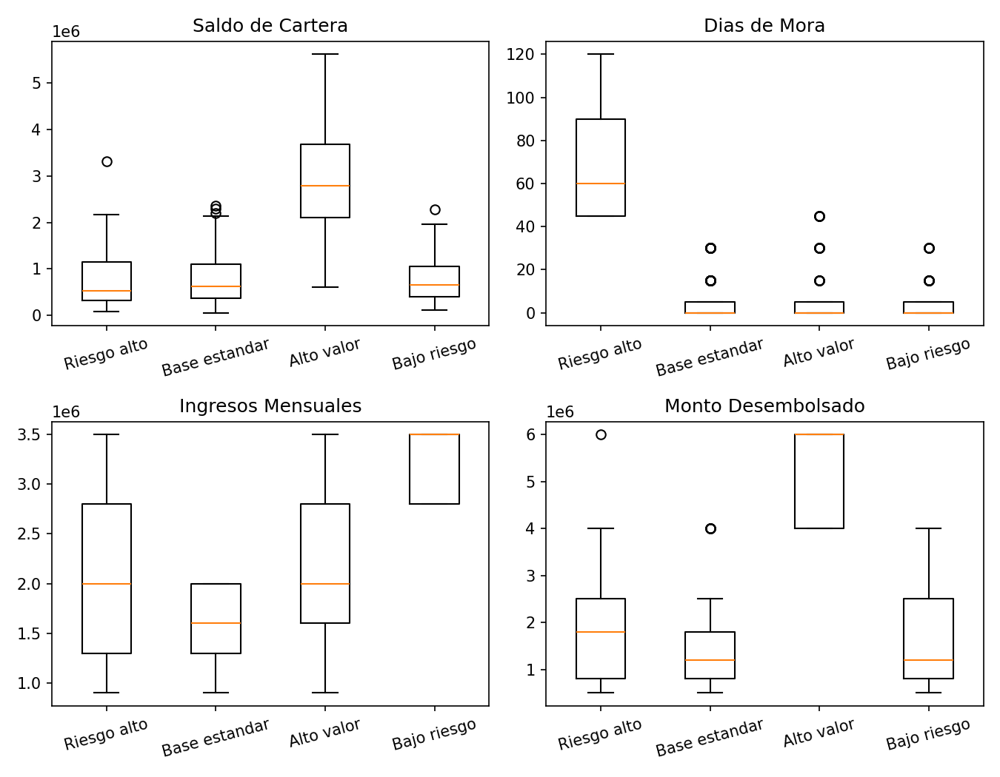
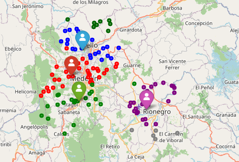
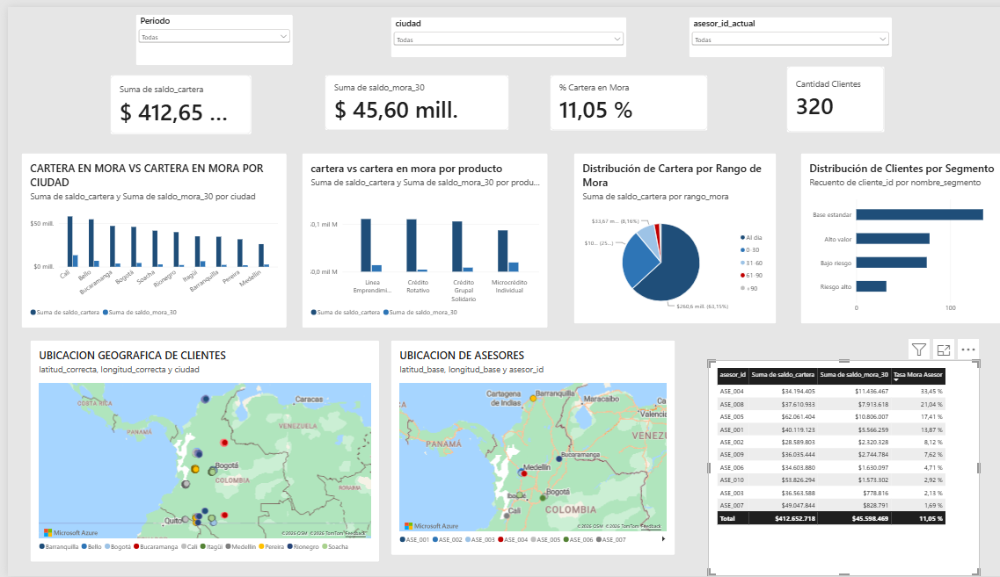

Data Scientist | Machine Learning & Analytics | Business Intelligence
Pandas, NumPy, Scikit-learn
Dashboards & DAX measures
Clustering, classification, regression
Data querying & modeling
Advanced analysis & reporting
Cloud-based model deployment
End-to-end BI/ML system for a microfinance case study: client segmentation, geographic optimization of loan officer assignments, and a Power BI management dashboard.
Portfolio risk varies sharply by city. Cali carries the highest delinquency rate in the network (22.93% of its portfolio) versus a national average of 11.05%, and accounts for 29% of total overdue balance despite not having the largest loan volume. Rionegro and Soacha, by contrast, show the healthiest behavior (5% and 7% delinquency).

K-Means clustering on scaled portfolio balance, days overdue, estimated monthly income, and disbursed amount identified four distinct client segments, validated with the elbow method and silhouette score:
| Segment | Description | Clients |
|---|---|---|
| High risk | Delinquency far above the rest (67 days on average) | 32 |
| Standard base | Largest client volume, lower income, controlled delinquency | 135 |
| High value | Larger loan sizes, moderate delinquency | 78 |
| Low risk | High income, minimal delinquency | 75 |

Haversine distance was calculated between all 320 clients and 10 advisors, then a linear programming model (PuLP) solved for the assignment that minimizes total travel distance while respecting each advisor's maximum client capacity. Along the way, coordinate data-entry errors were detected and corrected in 62 records (24 missing a longitude digit, 38 missing a latitude digit).

An interactive dashboard consolidates portfolio and delinquency by city and product, client distribution by delinquency range and by segment, client/advisor maps, and a highest-risk advisor view — filterable by period, city, and advisor. Includes a non-trivial DAX measure (% Overdue Portfolio, using DIVIDE to avoid division-by-zero errors).

As a complementary exercise, three origination policies were evaluated for allocating $1,000M COP in new credit lines in Cali, using observed (not assumed) segment-level delinquency rates:
| Scenario | Policy | Expected portfolio at risk |
|---|---|---|
| Pessimistic | No segment filtering | $229.3M |
| Medium | Excluding High-risk segment | $193.3M |
| Optimistic | Only Low-risk & Standard-base segments | $0* |
Clients analyzed in FinCrece
Distance reduction with optimization
Client segments with K-Means
GitHub repositories
Open to opportunities in Data Science, BI, and Machine Learning.